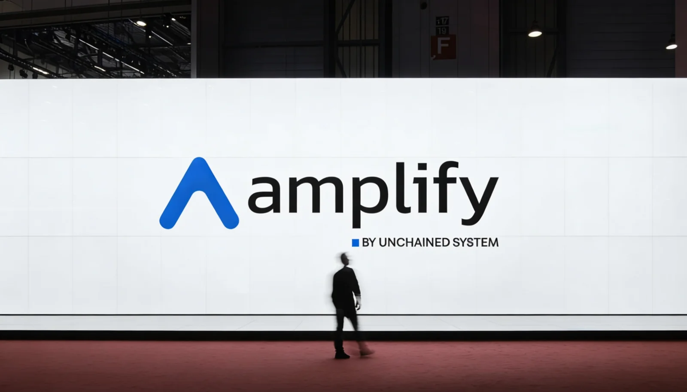
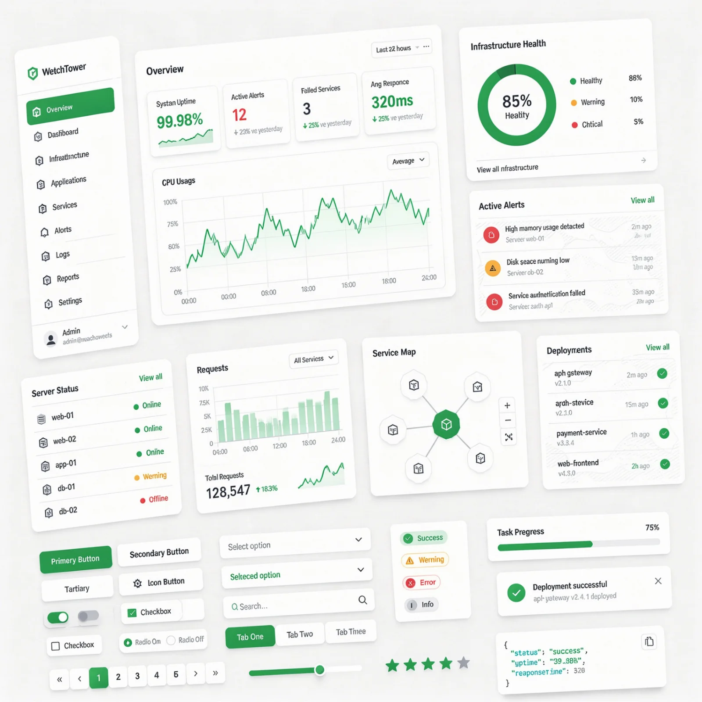
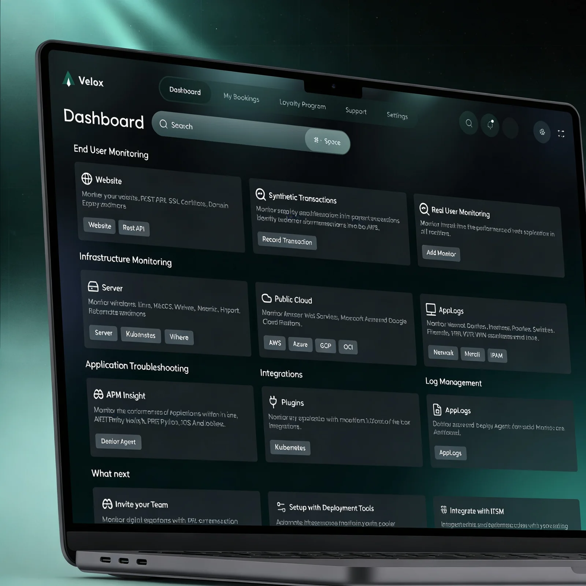

01

Amplify — ecosystem integration & unified experience
Consolidating a fragmented service platform into one seamless workflow for barbers, owners, and clients.
0→0
roles unified
+0%
task efficiency
0+
testers
Three case studies showing how I diagnose product friction and rebuild systems for clarity.

Consolidating a fragmented service platform into one seamless workflow for barbers, owners, and clients.

Transitioning legacy products into a component-based system to reduce technical debt and speed delivery.

Reducing friction in early user journeys so new users reach their first meaningful outcome faster.